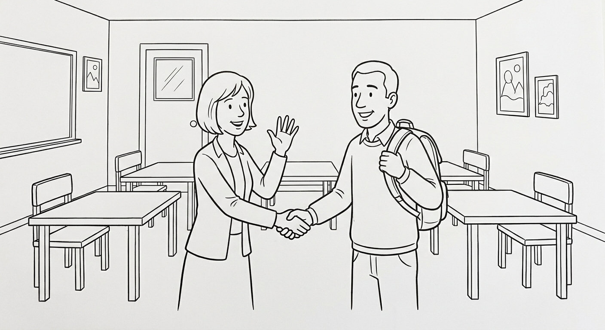

B1 Foundation Test 1
Personal information, home and family, daily routines, and important numbers. Show that you can understand, read, write, and use the formulas from Chapters 1–4. (Informações pessoais, casa e família, rotina diária e números importantes. Mostre que você entende, lê, escreve e usa as fórmulas dos Capítulos 1–4.)

| Section | Points | Score |
|---|---|---|
| 1. Listening | 25 | ____ / 25 |
| 2. Reading | 20 | ____ / 20 |
| 3. Writing | 20 | ____ / 20 |
| 4. Grammar and Vocabulary | 35 | ____ / 35 |
| Total | 100 | ____ / 100 |
Tempo sugerido: 70 minutos. O professor vai ler o texto de listening duas vezes. Você pode fazer anotações curtas. Escreva com letra clara. Nas respostas abertas, comunicar a mensagem é tão importante quanto a gramática perfeita. (Suggested time: 70 minutes. The teacher will read the listening text twice. Communication matters as well as accuracy.)
Listening: Signing Up for the English Course
Before reading: give students 45 seconds to preview Questions 1–5. Read the complete script once at slow, careful B1 speed — say each phone digit separately and read the price and date clearly. Pause for 30 seconds. Read it a second time. Do not explain vocabulary during the test. You may give procedural instructions in Portuguese. Total recommended time: Listening 12 min, Reading 15 min, Writing 18 min, Grammar/Vocabulary 25 min.
Receptionist: Good morning! Welcome to the English course. What is your name?
Paula: Hello! My name is Paula. I am from Olinda, but I live in Recife now.
Receptionist: Nice to meet you, Paula. What is your phone number?
Paula: It's nine, eight, seven, five, double two, four, one.
Receptionist: Thank you. The course is three hundred and fifty reais for the semester.
Paula: Sorry, can you repeat that, please?
Receptionist: Of course. Three hundred and fifty reais. Classes start on the second of March.
Paula: Perfect. Thank you very much!
Answer with a word, a number, or a short sentence. (Responda com uma palavra, um número ou uma frase curta.)
Where does Paula live now?
In Recife. (She is from Olinda, but she lives in Recife.)Write Paula's phone number in digits.
9875-2241 (nine, eight, seven, five, double two, four, one — accept any clear grouping of 9 8 7 5 2 2 4 1)How much is the course? Write the price in digits.
350 reais.When do classes start?
On the second of March / March 2nd.Paula does not understand the price the first time. What does she say?
"Sorry, can you repeat that, please?" (any close version of the repair phrase)Reading: A New Student's Profile
Hello! My name is Camila and I am 28 years old. I am from Caruaru, but now I live in Recife, at number 245, near the bus stop. I work in a bakery in the morning and I study English at night.
I live with my mother and my two brothers. At home, my mother cooks dinner and my brothers wash the dishes. I make my bed every day and I do the shopping on Saturdays.
I wake up at 6 o'clock, take a shower, and have breakfast. My birthday is on the third of May. My dream is to speak English at work!
Where is Camila from, and where does she live now?
She is from Caruaru; she lives in Recife (at number 245).What does Camila do in the morning and at night?
She works in a bakery in the morning and studies English at night.Who washes the dishes in Camila's house?
Her (two) brothers.When is Camila's birthday? Write the date in digits or words.
On the third of May / May 3rd / 03/05.Writing: Introduce Yourself
A new classmate wants to know you. Write 40–60 words about yourself. Include: (Um novo colega quer conhecer você. Escreva de 40 a 60 palavras sobre você. Inclua:)
- your name and your age (seu nome e sua idade);
- your city (sua cidade);
- if you work or study (se você trabalha ou estuda);
- one thing you do at home or in your routine (uma coisa que você faz em casa ou na sua rotina);
- one question for your classmate (uma pergunta para o colega).
| Writing criterion | Points | Teacher score |
|---|---|---|
| Completes the introduction and includes the five required details | 8 | ____ / 8 |
| Message is organized and understandable | 4 | ____ / 4 |
| Target language supports meaning (verb to be, Simple Present, pronouns) | 4 | ____ / 4 |
| Vocabulary, spelling, and punctuation are clear enough | 4 | ____ / 4 |
Message completion comes first: did the student communicate the five details? Do not deduct the same error twice. An introduction with imperfect grammar can score well when it is easy to understand. Written feedback may be given in Portuguese at this level.
Grammar and Vocabulary in Context
Complete or rewrite each everyday situation. (Complete ou reescreva cada situação do dia a dia.)
Write the number in full English words: 342
three hundred and forty-twoWhat to Keep and What to Practice Next
| Skill | Score | Next action |
|---|---|---|
| Listening | ____ / 25 | Listen for names, cities, numbers, prices, and dates. |
| Reading | ____ / 20 | Find personal information: who, where, what, and when. |
| Writing | ____ / 20 | Introduce yourself with complete sentences: name, city, work or study. |
| Grammar/Vocabulary | ____ / 35 | Review am/is/are, pronouns, plurals, the third-person -s, and numbers. |